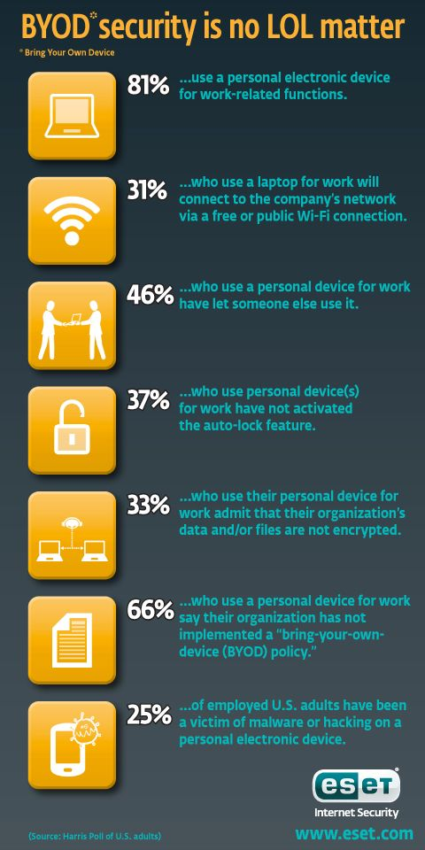

The practice of allowing employees, contractors and other people working in an organisation to use their own laptop computers, mobile devices and portable storage in the workplace is known as ‘Bring Your Own Device’ or BYOD. It is a practice which can have both positive and negative implications for both the organisation and the employee – whether the device is brought into the workplace or used remotely. However much you trust the people who work for or with you, personal devices pose one of the highest risks to any organisation’s information security.
When you allow employees to bring their own devices to work, it can create a more open, efficient and relaxed environment that benefits both parties. Some BYOD benefits, include: Save money by eliminating the need to buy each employee specific devices and equipment. Increase happiness and satisfaction of your employees. Boost productivity by allowing employees to use devices they are familiar and comfortable with. Have up-to-date technology when employees get the latest and greatest devices.

Kensington infographics (2020) published a report titled "Marrying Information Privacy with BYOD," in which they found that only 7% of the 70 million devices that are stolen each year are ever found, and that 15% of employees surveyed in the same study admitted to using non-work-approved devices for accessing critical company information. The research went on to show that 54% of the companies surveyed had no system in place to remotely delete employee-owned devices, and that 65% of those same companies could not even remotely delete devices if they wanted to. What's more, a whopping 76% of businesses did not even bother to secure mobile devices. These numbers illustrate how closely BYOD and information security are linked.
Protecting personal information is crucial. Lack of access controls on personal information puts individuals at risk of fraud, phishing scams, identity theft, cyber bullying, and cyber stalking. IBM estimates that the total cost of a Ransomware attack is $4.62 million, which is slightly higher than the average cost of an information breach ($4.24 million). In the United States, information breaches have affected 45 percent of businesses. The United States incurred the highest costs worldwide due to information breaches in 2021, with an average total cost of $9.05 million. Companies with more remote workers had a 60% higher average cost of a information breach than companies without remote workers. Sixty-two percent of breaches that did not involve an error, misuse, or physical action involved the use of stolen devices, credentials, brute force, or phishing. Incorrect actions by humans account for 23% of all security incidents. An average of 287 days were required to detect an information breach, and an additional 80 days were required to contain it. The same IBM report found that ransomware accounted for nearly 25% of malware-related cases, with an average of 4,800 infected websites per month.
A MXOtech (2018) article on enforcing a secure BYOD policy, the next steps can be taken to protect sensitive information on personal devices:
It is important to note that the researcher chose this area of study because she is currently employed by the National Library of South Africa in the IT department and has a strong interest in the topic of BYOD information privacy protection, as discussed briefly above.
Based on my extensive background working with library systems in Gauteng, I can say that both library employees and users are frequently permitted to use their own devices while connected to the library's wired and wireless network. Since the library's computers might not always be able to accommodate everyone, users are welcome to bring their own devices. Public users can only connect to the public Wi-Fi, while library staff can use either the public or the production (private) network. When connected to the production Wi-Fi, both onsite and off, workers can use it to get to their work applications from anywhere. It is important to note that both library users and staff are permitted to bring in their own mobile devices, USB storage devices, flash memory cards, CD/DVD ROMs, and other similar portable media to the library (e.g. cellular smartphones, tablet computers). Since both library employees and users may be able to access and steal library intellectual property, sensitive information, or even licensed software through the library management system, it is possible that this room, which provides access to the company network and hardware, needs to be addressed.